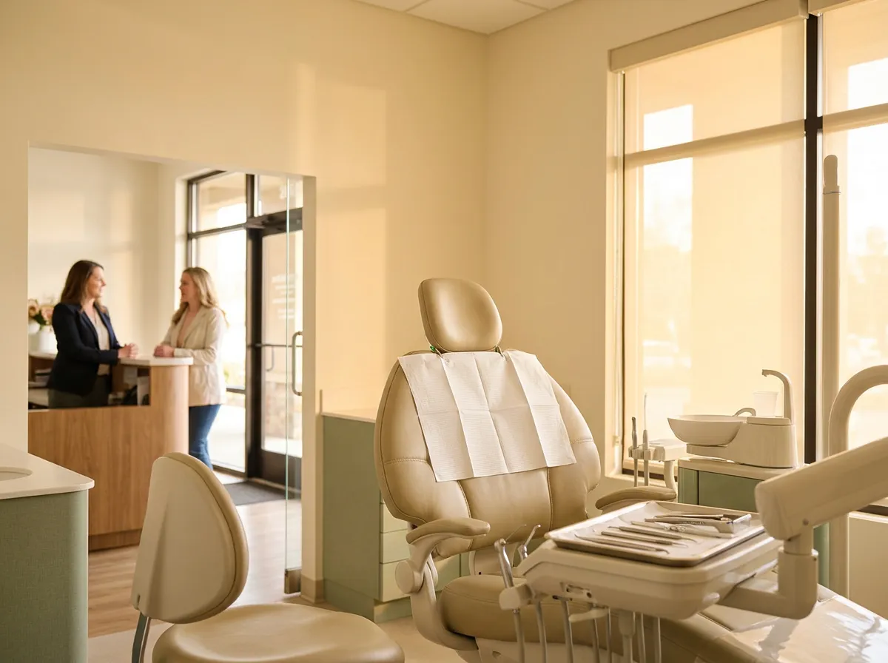

When a patient cancels the morning of their appointment, the clock starts. Industry estimates commonly put an unfilled hygiene slot at $150 to $300 and an unfilled restorative slot at $500 or more, and that hour of overhead gets paid either way. The practices that consistently refill same-day openings do seven things: they catch the cancellation call instantly, keep a ready short-notice list, text before they call, make rebooking part of the cancellation itself, use assumptive reminders to prevent the gap, prioritize high-value openings, and track why patients cancel. Here is how each one works.
Dental · Listicle
7 ways dental practices can fill last-minute cancellations (before the chair sits empty)

$150–$300
commonly estimated loss when a practice leaves a hygiene slot unfilled
$500+
commonly estimated loss on an unfilled restorative slot, with the hour of overhead paid either way
<1 hr
a commonly reported refill time for a same-day slot when the short-notice list is warm
01
Catch the cancellation call the moment it comes in
The refill window opens at the exact second a patient cancels, and most cancellations arrive by phone. If that call hits voicemail because the front desk is checking in a patient or the office has not opened yet, you lose the two most valuable hours of refill time before you even know the slot exists. A 7:40 AM cancellation caught at 7:40 gives you the whole morning to fill a 10 AM slot; the same message discovered at 9:15 gives you almost nothing. Answering every call, live, is not a courtesy here. It is the trigger for everything else on this list.
This is also where the before-hours gap bites hardest. Patients who wake up sick or get called into work cancel between 7 and 9 AM, often before your phones are staffed. A practice that catches those calls live, even before the doors open, starts every refill with a head start the practice down the street does not have.
02
Keep a short-notice list that is actually ready to use
Every practice says it has a waitlist. Very few have one the scheduler can work in five minutes. A usable short-notice list names patients who explicitly agreed to be contacted for openings, notes their preferred days and times, flags who has flexible schedules, and records the treatment they are waiting for so you match a 60-minute opening with a 60-minute need. Keep it in your practice management software, not on sticky notes, and prune it monthly. A stale list wastes the refill window you just protected.
03
Text the list first, then call the top three
Speed beats formality. A short text to your matched short-notice patients, sent within minutes of the cancellation, fills more slots than an afternoon of phone tag: “We just had a 2:30 opening today with the hygienist. Want it? Reply YES and you are booked.” Patients answer texts they would never pick up the phone for. Then personally call the two or three best matches, because a live voice converts the hesitant ones. The combination often refills a same-day slot in under an hour when the list is warm.
One caution: send the text to a handful of well-matched patients, not a blast to fifty. First reply wins creates awkward conversations with the patients who answered second, and it trains people to ignore your messages. Small, targeted, fast beats broad every time.
04
Rebook the canceling patient before the call ends
A cancellation handled well is two transactions, not one: release the slot, then immediately place the patient in a new one. “No problem, let's find you a better time. We have Thursday at 9 or Monday at 3.” Done in the same conversation, rebooking rates are dramatically higher than when the patient promises to call back, because patients who hang up without a new appointment often drift for months and become reactivation projects. This only works if whoever answers the phone can see the schedule and book on the spot, at 7 AM or 7 PM, not just take a message.
Train the team on the wording, too. “Would you like to reschedule?” gets a “I will call you back.” Offering two concrete times gets a booking. The difference between those two sentences, repeated across a year of cancellations, is dozens of patients who stayed on the schedule instead of quietly falling off it.
05
Use reminders that assume attendance, not ones that invite exits
Reminder messages shape behavior. “Please call to confirm your appointment” quietly teaches patients that appointments are tentative and invites a cancellation. “We are ready for you Tuesday at 10, reply C to confirm” assumes attendance and makes showing up the default. Send one reminder 48 hours out, when there is still time to refill if the patient bails, and one the morning of. The 48-hour message is the important one: a cancellation with two days of notice is a scheduling task, while a same-day one is a fire drill.
06
Protect the expensive slots first
Not all openings cost the same. A cancelled crown prep or implant consult can be a four-figure hole, so triage your refill effort by production value, not by order of cancellation. For high-value openings, work the call list personally, offer the slot to patients with pending treatment plans who have been “thinking about it,” and let your associate or hygiene team know the block may shift. A same-day call that says “Dr. Reyes had an opening tomorrow at 11 and can get your crown done weeks early” converts surprisingly often. It feels like priority treatment, because it is.
07
Track why patients cancel, and fix the pattern, not just the day
Log every cancellation with a reason: cost, fear, work conflict, childcare, forgot. It takes the scheduler ten extra seconds per call and turns a frustrating day into usable data. After a month the pattern is usually obvious. Cost cancellations mean financing conversations are happening too late. Monday morning cancellations mean weekend second thoughts with no way to reach you; if patients could only cancel by calling during office hours, some of those would have been reschedules instead. Practices that let patients reach a live answer on weekends, even just to move an appointment, convert a meaningful share of would-be cancellations into new bookings on the same call.
The thread running through all seven
Almost every tactic above depends on the phone being answered the moment it rings: the cancellation caught live at 7:40 AM, the rebooking done in the same conversation, the weekend reschedule that never becomes a no-show. That is the gap Sol closes for dental practices. Sol answers every call in seconds, around the clock, in English and Spanish, cancels and rebooks patients directly on your schedule, and alerts your front desk instantly when a same-day slot opens so the refill routine starts immediately. It does not replace your front desk team; it backs them up, so the person at your counter can give the patient in front of them full attention while no caller ever hits voicemail.
An empty chair is one of the few costs in dentistry you can claw back the same day. Answer fast, keep the list warm, text first, and rebook before the goodbye.
Common questions
How much does a last-minute cancellation cost a dental practice?
Industry estimates commonly put an unfilled hygiene slot at $150 to $300 in lost production and an unfilled restorative slot at $500 or more. Overhead for the hour, including staff, space, and equipment, is paid whether the chair is full or empty, which is why refilling same-day openings has such a direct effect on profitability.
What is the fastest way to fill a same-day dental cancellation?
Text a prepared short-notice list within minutes of the cancellation, offering the specific time, then personally call the two or three best-matched patients. Practices with a current, well-matched list often refill same-day slots in under an hour. Speed matters most: the refill window opens the moment the cancellation call is answered.
How do you build a short-notice list for a dental office?
Ask patients at checkout and during reminder calls whether they would like earlier openings, and record their preferred days, times, and pending treatment in your practice management software. Only include patients who explicitly opted in, and review the list monthly so every entry is current and reachable.
Do appointment reminders reduce last-minute cancellations?
Yes, when they are worded to assume attendance. Messages like "reply C to confirm" outperform "please call to confirm," which invites cancellation. Send one reminder 48 hours before the appointment, leaving time to refill the slot if the patient cancels, and a second one the morning of the visit.
Can an AI receptionist help with dental cancellations?
Yes. An AI receptionist like Sol answers cancellation calls the moment they come in, including before opening and on weekends, rebooks the patient in the same conversation, and alerts the front desk immediately that a slot has opened. That live answer converts many would-be cancellations into reschedules and gives the team the maximum window to refill the opening.